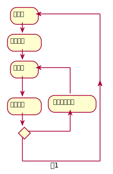

基于仿真的车辆控制参数优化系统
背景技术
技术领域,背景集相关技术发展
发明最接近的现有技术
现有技术的问题
技术方案的发明殿概述
- 辅助车辆控制器设计中重要参数的开发和验证
- 在仿真环境中可以灵活调整工况，路况，比如可设计道路，车辆负载，变更天气，路面阻尼，交通拥堵情况等等
- 参数优化模块是独立与常规控制模块上层控制模块，可将和工况相关优化考虑到控制器的实时调整策略中
- 具备完整的基准数据，可以获取准确的反馈数据和环境数据以及车辆数据，为精准评估控制和优化策略提供依据
- 模块化设计的平台具备灵活的可扩展性，便于添加环境感知数据，车辆横纵向控制系统，驱动系统，底盘系统等模型，可通过灵活的通信接口迅速集成相关子系统
技术方案的详细阐述

- 如上图所示，为基于仿真与车辆控制器参数优化系统的流程。系统由两个环路组成, 一个是常规车辆控制环路,另一个是控制器参数优化环路.常规车辆控制环路由操作者发起对车辆控制的指令，经人机交互平台输出至车辆动态控制器，控制器接收人机接口的信号导入仿真环境对车辆进行控制,操作者通过仿真系统人机接口比如反馈和仿真视频得到车辆控制的反馈并自行调整自己对车辆的动态操控。
- 控制器参数优化模块独立于常规控制模块,通过仿真环境基于车辆控制效果反馈按照独立于常规控制器控制指标的参数进行控制评估,可参考指标包括舒适性,节能和环保等，参数优化模块按照独立的时间周期和策略对现存控制器参数进行评估,经过并行的优化策略参数对控制器参数进行动态实时更新,并导入控制器。
上述技术方案产生了什么技术效果
上述技术方案中可以替代的地方